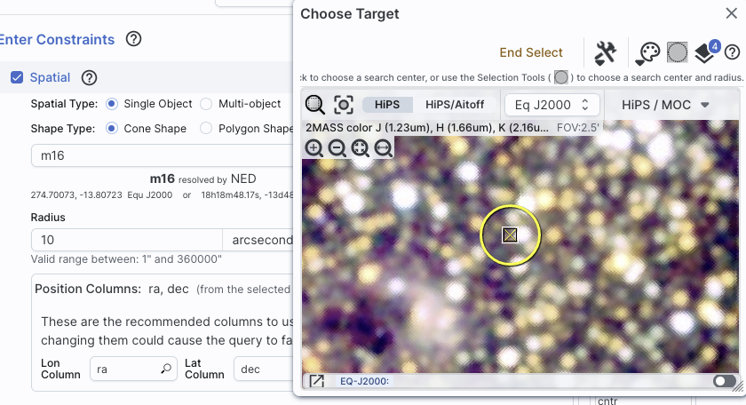
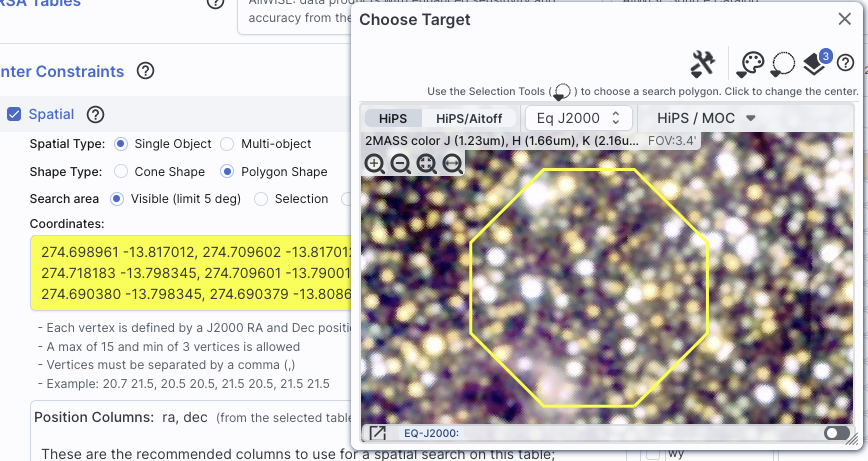
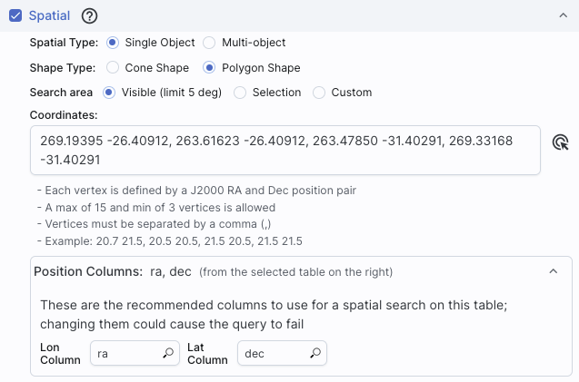
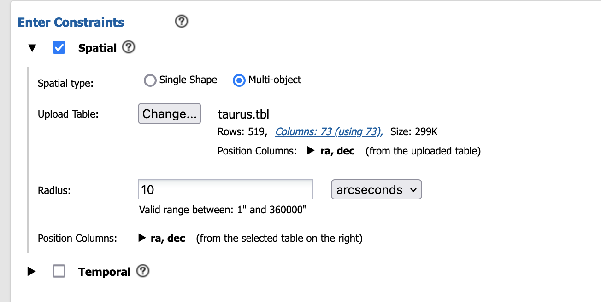
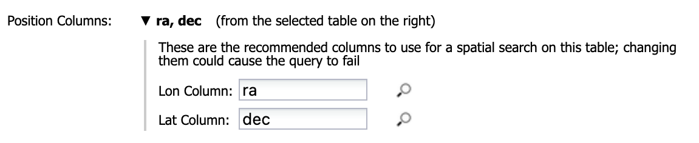
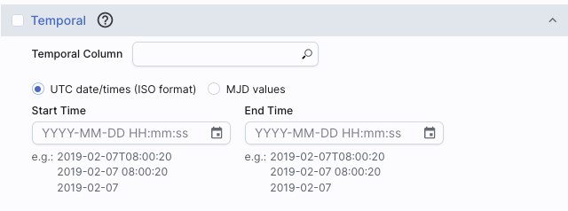
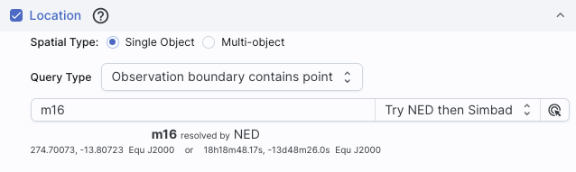
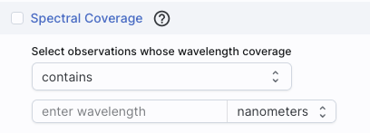
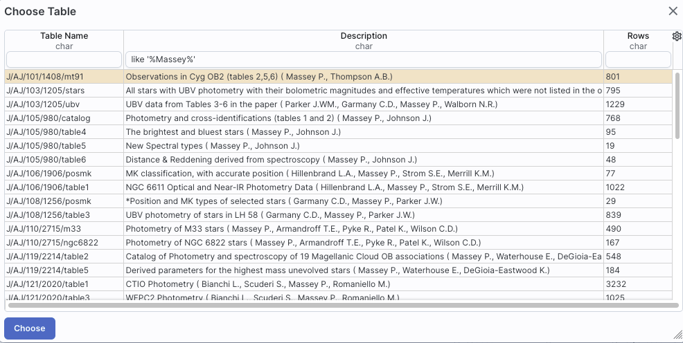
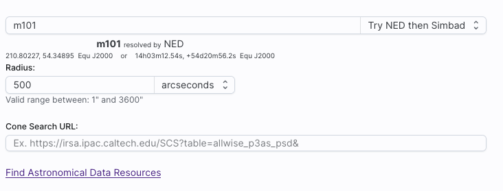

Contents of page/chapter:
+Introduction & Terminology
+Interactive Target Refinement
+VO TAP: More about constraints
+VO ObsCore: More about constraints
+TAP Search
+ObsCore Search
+NED Objects -- Searching for NED objects
+VO SCS -- VO Simple Cone Search
Firefly can help you interactively create ADQL which then you can copy and use in your own code elsewhere.
By using TAP and ObsTAP queries, you can use IRSA (or someone else's) services to talk to other archives that also comply with these standards, world-wide.
The first several parts of this section talk more generally about interactive target refinement and constraints that are common to more than one of the searches discussed here. Specifics of particular searches follow after that.
When you click on the icon you bring up a window:
 | If you have entered a target already, the window arrives already centered on the target. If not, it is centered on the galactic center, zoomed out. If you have entered a cone search radius already, then the circle drawn on the image is that cone size. You can manipulate this image with the same basic tools as in the visualization tools. |
 |
To change the search region interactively, choose the selection
tools and draw a shape on the image. Note that if you have selected a cone search on the left, no matter what you select on the right, it will give you a cone search. If you change the cone position or radius in the yellow boxes after you change the selection, it will update the region in the image. |
|  | If you want to quit out of the selection without changing, click on "end selection" (the brown text near the top of the image). |
|  | If you select polygon on the left, and you use the selection tool for "cone selection" on the right, you will get a spherical polygon (a polygon where the line segments are on a sphere). |
When you are done with this pop-up window, click on the 'x' in the upper right of the window. Then you can continue with whatever you were doing before you started to refine your target parameters.
You can have several different ways of constraining your search depending on the options you have selected before the "Enter Constraints" section, and the options depend on what kind of service is available at the TAP service you have selected. If the options do not appear initially, click on the downward arrow to "unfold" the options.

| This is what it looks like when you do a single target cone search; note that you have the same name resolution options as in any other search here. |
|  |
And, this is what it looks like when you do a single target polygon
search. The search areas here (visible, selection, and
custom) are the same as when you do a polygon search on catalog -- that is, you can select whether
you want the catalog request to match the entire area of the image you
have selected ("image"), or just the portion of the image you can see
in the current view ("visible"), or your own ("custom") area. The list
of vertices in the coordinates box are in decimal RA and Dec in
degrees. You must enter at least 3 and at most 15 vertices, separated
by a comma. You can also click on this icon to interactively refine your search position. |
 | If you want to perform a multi-target search, click on "multi-object", which automatically brings up this pop-up, from which you can load a table from disk ("Upload tables" tab) or select one of the tables you have already loaded into the tool (click on the "Loaded tables" tab). Your uploaded catalog has to follow all the same rules as normal catalogs from disk. |
|  | After you find your file with your listed positions and upload it, the tool attempts to guess which two columns are the position columns. In this example, it has (correctly) guessed that the position columns are "ra" and "dec". If it guesses wrong, or can't figure it out, you can help it along by clicking on the down-arrow to 'expand' that part of the panel and selecting the two coordinate columns to use. |
|  | Regardless of what configuration you use, the last thing to check is which columns the tool has assumed are the position columns in the catalog to be matched to your position, region, or list of positions. Again, it attempts to make an educated guess as to the right columns, but if it guesses wrong, you can help it along by clicking on the down-arrow to 'expand' that part of the panel and selecting the two coordinate columns to use. |
| This is what the panel looks like initially, where you specify the column in the catalog you are searching with the time and then the dates. If you don't remember what the column is in the catalog, click on the magnifying glass to get a pop-up with a list of all of the columns. |  |
| For the dates and times, if you click on the calendar icon at the far right of the entry box, you get a pop-up from which you can specify the date and time, shown here. |  |
| If you would like to work in MJD instead of ISO dates, select the "MJD" radio button. Note that it echoes below the box what it thinks you've entered in two different systems (UTC and MJD) to verify what you have entered. |  |
| This is what the panel looks like initially: |  |
| This is what the panel looks like after you have selected your uploaded list of IDs (in this case, a file called "gaiaids.tbl", which consists of an IPAC table file that is just the list of Gaia IDs, in a column called "gaiaid"), and it is being matched against the Gaia DR3 main catalog, where the relevant field is "source_id". |  |
⚠ Tips and Troubleshooting
These are several additional ways of constraining your search depending on the options you have selected before the "Enter Constraints" section. These options appear if you have selected an ObsCore search. If all of these options do not appear initially, click on the downward arrow to "unfold" the options.
 |
This panel provides a way to constrain the:
|
|  | This panel provides a way to constrain the location of your
search. Here, it is a single object search, which works just like it
does above, including the interactive
target refinement via the bullsye icon. You can also upload a
list of targets by selecting "multi-object" -- it brings up the same
pop-up as above, from which you can load a table from disk ("Upload
tables" tab) or select one of the tables you have already loaded into
the tool (click on the "Loaded tables" tab). Your uploaded catalog
has to follow all the same rules as normal catalogs from disk.
|
You can specify via the drop-down the type of your query: "observation boundary contains point", "observation boundary contains shape", "observation boundary is contained by shape", "observation boundary intersects shape", and "central point (s_ra, s_dec) is contained by shape." The latter refers to the columns "s_ra" and "s_dec" in the ObsTAP table.
 |
This panel provides a way to constrain the observation time of your search. This is the default option, where you want data completed in the last x hours (or other unit of time). |
| This is the alternate option, where you want data overlapping a specified date range, where you can specify UTC or MJD times. |
|  | This panel provides a way to constrain the spectral coverage of your search. This is the default option, where you want data containing a given wavelength. |
 |
This is the alternate option, where you want data overlapping a specified wavelength range. |

Select Table: If you have selected IRSA's TAP service, the next choices are IRSA Tables. You first need to select the "project" (called "Table Collection" or "Schema"). Then, having selected that, the drop-down menu on the right changes to reflect the tables available under that schema.
Then Enter Constraints: On the left, you can impose a variety of constraints. In addition to selecting the tickbox indicating that you wish to impose a particular kind of constraints, you need to specify which columns should be used for those constraints. More information on these constraints is above. On the right is a list of the columns in the selected table, with tickboxes to indicate which columns will be returned. You can also set constraints on the columns from here, following the same filter rules as for any tables here. Above this section of the screen, there is an indication of which columns are selected (e.g., 45 of 298 columns). You can reset the column selection via the button here as well.
Then to actually do it, click "Search."
After populating the search parameters using the UI, you can click the button on the bottom, "Populate and edit ADQL" -- this takes the parameters you have entered, creates the ADQL, and launches the "Edit ADQL (advanced)" interface.
You can get to this screen by selecting "Edit ADQL (advanced)" in step two, or by clicking on "Populate and edit ADQL" after filling out the UI.
You can select the schema from the left side of the screen. Each of the schemas can expand into viable tables and then columns within each table via clicking on the "+" to the left of the folder icon. Click on a column name to have it appear at the location of your cursor in the ADQL query box on the right. If you have the tickbox checked on the right that says "Insert fully-qualified column names", clicking on the column name inserts fully-qualified column names at your cursor location in the box.
You can type the ADQL directly into the box. If you configured a search on the "UI assisted" page, this box is already pre-filled with the ADQL version of your search, and you can proceed to edit it further.
Examples of useful functions and queries are given on the lower right of this window; you may need to scroll down.
If you choose to use the GUI, you can work within it to set the constraints you desire at the bottom of the screen; see VO TAP: More About Constraints for all of the information about setting constraints.
If you select VizieR's TAP services in particular, because there are
so many tables, the tool will give you a slightly different interface
under the "Tables" section of the window. Here is the default Vizier
choices as of this writing:
Note that it tells you how many tables and rows are available.
Switching to tables associated with journal articles, far more tables
are available:
Now, if you click on the second tier menu (J/AJ/100/1091/table9), you
get a pop-up, which is another Firefly table
like any other in this tool, so it's searchable and sortable:

which makes it trivially easy to find tables in which you are
interested, such as those associated with papers by Massey, as
shown. Select the table that you want to search, and then continue to
specify the rest of your search, just as described above in
the IRSA VO TAP Search screen discussion.
The result of any VO TAP search is a catalog that can be interacted with like any other catalog in this tool.
A special case of a TAP search is an ObsCore search; see next section.
There are ObsCore servers all over the world, but a good default server to try is the CADC ObsCore service, which is what is used for these screenshots. If any given service supports ObsCore, then an ObsCore switch appears. Toggle that if so desired.
The "UI Assisted"/"Edit ADQL" switch at the top right works just like it does above -- use the UI to construct a query or dive right into the ADQL yourself.
Then in the remaining part of the screen, impose the constraints you want -- see the constraints section above.
At the bottom of the screen, you can "Populate and edit ADQL" if you want to work with the ADQL directly, or just search straight away after setting your search parameters.
Here are results of a basically unconstrained search on M16:
The coverage image on the left shows the polygons of coverage of the observations it found, and the plot on the right is the (relatively uninformative) plot of the positions associated with the observations. The table on the bottom as a list of the observations that it found consistent with the search parameters. This table is like any other table in this tool, so it can be sorted, filtered, etc. Data can be selected for download via the tickboxes on the left. The other tab on the upper left ("Data Product") shows a preview, when possible, of the data product corresponding to the highlighted row in the table.
The result of any ObsCore search is a table that is a list of observations, and that table can be interacted with like any other table in this tool. However, it is a table of observations and/or services, so it yields much more than just a row in a catalog; it can give you images, spectra, and more.
To see this tab as a choice on the top, you may need to select it from the side menu.

As for the other catalog searches, the tool may pre-fill the target position with its best guess of the coordinates of the target with which you have been working. You can use an object name in place of coordinates. Note that although NED is used for name resolution, the actual search is then performed using coordinates, as opposed to name. In this case, you are limited to a cone search, so the next option is the cone search radius. Pick your units from the drop-down first, and then enter a number; if you enter a number and then select from the drop-down, it will convert your number from the old units to the new units. There are both upper and lower limits to your search radius; it will tell you if you request something too big or too small.
From the NED results, you have one-click access to the fully detailed information from NED on any object returned from such a search. The search results will generally include a column "Details", though you may have to scroll to the right to see it. Clicking on a link in this column takes you directly to the full NED information display for the selected object in a new window.
The result of any NED search is a table that behaves like any other table in this tool.
To see this tab as a choice on the top, you may need to select it from the side menu.

As for the other searches, the tool may try to pre-fill the target position with the coordinates of the target with which you have been working. In this case, you are limited to a cone search, so the next option is the cone search radius. As usual, pick your units from the drop-down first, and then enter a number; if you enter a number and then select from the drop-down, it will convert your number from the old units to the new units. There are both upper and lower limits to your search radius; it will tell you if you request something too big or too small.
If you know your VO URL already, you can jump down to the Cone Search URL box and type or paste your URL into the box and hit search.
More commonly, however, users do not know a priori which URL to use. Click on "Find Astronomical Data Resources" to be dropped into a VO search. Find the URL corresponding to the catalog you want, copy it, and go back and paste it in the URL box. The URL should not have the RA and Dec in it; the tool will add your RA and Dec as listed to the URL in the right syntax. Click on "Search" to initiate the search.
Example
Load the tool. Search on IC1396. Go to the catalogs tab. Choose "VO
Catalog." It wants the root URL for a cone search. Click on "Find
Astronomical Data Resources", which goes here  . Search on IPHAS. Get this page
. Search on IPHAS. Get this page  .
Look for the complete catalog release (not just one associated with
one specific study). The name of the catalog goes here
.
Look for the complete catalog release (not just one associated with
one specific study). The name of the catalog goes here  . Hit
the [+] to expand it. There is one URL listed there, under "available
endpoints for the standard interface." Copy that URL and paste it into
the search form. The IRSA tool will append your coordinates and radius
and return you a table.
. Hit
the [+] to expand it. There is one URL listed there, under "available
endpoints for the standard interface." Copy that URL and paste it into
the search form. The IRSA tool will append your coordinates and radius
and return you a table.
⚠ Tips and Troubleshooting
The result of any VO SCS search is a catalog that can be interacted with like any other catalog in this tool.